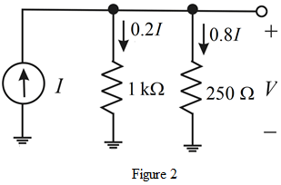

20% of the source current is flows through  resistor and remaining current flows through another resistor.
resistor and remaining current flows through another resistor.
In Figure 1, the voltage across each branch is same.
Therefore,
Draw the designed current divider circuit.

Hence, a simple current divider circuit is designed.